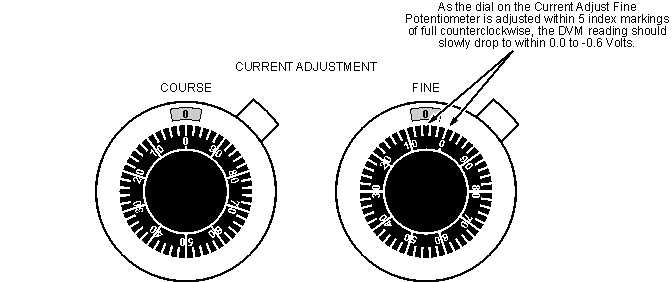

| NOTE: | This adjustment is a step function. The DVM reading will not vary continuously as R605 is adjusted. The function of R605 is to set the threshold at which no voltage is available at the power supply output when the Current Adjustment Potentiometers are set to minimum. If R605 is adjusted much beyond the threshold point, there will be a delay between the point at which the Current Adjustment Potentiometers are adjusted, from minimum, until there is a noticeable current output of power supply. |
| NOTE: | It takes approximately 2 minutes for the DVM reading to decay to between 0.0 Volts and -0.6 Volts. A few trials adjusting the Current Adjust Fine Potentiometer must be done to insure the power supply output voltage drops and rises as the Current Adjust Fine Potentiometer is adjusted in and out of the range. See Illustration 4. |
Illustration 4: Current Adjust Potentiometers
